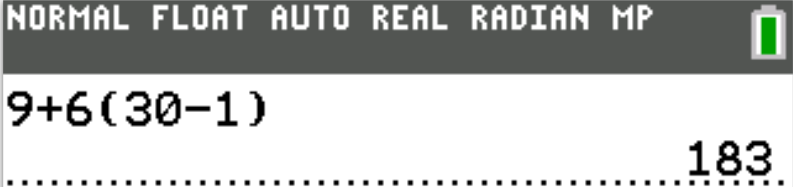
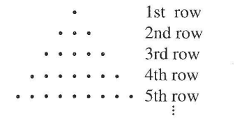

For the Classic ACT exam:
The ACT Mathematics test is a timed exam...60 questions in 60 minutes
This implies that you have to solve each question in one minute.
Each of the first 20 questions (less challenging) will typically take less than a minute a solve.
Each of the next 20 questions (medium challenging) may take about a minute to solve.
Each of the last 20 questions (more challenging) may take more than a minute to solve.
The goal is to maximize your time.
You use the time saved on the questions you solve in less than a minute to solve questions that will take more
than a minute.
So, you should try to solve each question correctly and timely.
So, it is not just solving a question correctly, but solving it correctly on time.
Please ensure you attempt all ACT questions.
There is no negative penalty for a wrong answer.
Also: please note that unless specified otherwise, geometric figures are drawn to scale. So, you can figure out
the correct answer by eliminating the incorrect options.
Other suggestions are listed in the solutions/explanations as applicable.
These are the solutions to the ACT past questions on Sequences.
The link to the video solutions will be provided for you. Please
subscribe to the YouTube channel to be notified of upcoming livestreams. You are welcome to ask questions during
the video livestreams.
If you find these resources valuable and helpful in your passing the
Mathematics test of the ACT, please consider making a donation:
Your donation is appreciated.
Comments, ideas, areas of improvement, questions, and constructive
criticisms are welcome.
Feel free to contact me. Please be positive in your message.
I wish you the best.
Thank you.
Symbols and Formulas: Arithmetic Sequence
$AS_n$ = $nth$ term of an Arithmetic Sequence
$a$ = first term
$p$ = last term
$d$ = common difference
$n$ = number of terms
$SAS_n$ = sum of the first $n$ terms of an Arithmetic Sequence
$
(1.)\:\: AS_n = a + d(n - 1) \\[5ex]
(2.)\:\: AS_n = vn + w \:\:where\:\: v = d \:\:and\:\: w = a - d \\[5ex]
(3.)\:\: p = a + d(n - 1) \\[5ex]
(4.)\:\: SAS_n = \dfrac{n}{2}(a + AS_n) \\[7ex]
(5.)\:\: SAS_n = \dfrac{n}{2}(a + p) \\[7ex]
(6.)\:\: SAS_n = \dfrac{n}{2}[2a + d(n - 1)] \\[7ex]
(7.)\:\: n = \dfrac{2 * SAS_n}{a + p} \\[7ex]
(8.)\:\: n = \dfrac{p - a + d}{d} \\[7ex]
(9.)\:\: n = \dfrac{-(2a - d) \pm \sqrt{(2a - d)^2 + 8d*SAS_n}}{2d} \\[7ex]
(10.)\;\; d = \dfrac{(p - a)(p + a)}{2 * SAS_n - p - a}
$
Symbols and Formulas: Geometric Sequence
$GS_n$ = $nth$ term of a Geometric Sequence
$a$ = first term
$p$ = last term
$r$ = common ratio
$n$ = number of terms
$SGS_n$ = sum of the first $n$ terms of a Geometric Sequence
$S_{\infty}$ = sum to infinity of a Geometric Sequence
(1.) On the first day of school, Mr. Thibodeaux gave his third-grade students 9 new spelling words to learn.
On each day of school after that, he gave the students 6 new spelling words.
How many new spelling words had he given the students by the end of the 30th day of school?
1st day: 9 new spelling words 2nd day: 6 new spelling words, total = 9 + 6 = 15 new spelling words 3rd day: 6 new spelling words, total = 9 + 6(2) = 9 + 12 = 21 new spelling words 4th day: 6 new spelling words, total = 9 + 6(3) = 9 + 18 = 27 new spelling words
This is an Arithmetic Sequence
$
a = 9 \\[3ex]
d = 6 \\[3ex]
n = 30 \\[3ex]
AS_n = a + d(n - 1) \\[5ex]
AS_{30} = 9 + 6(30 - 1) \\[5ex]
= 9 + 6(29) \\[3ex]
= 9 + 174 \\[3ex]
= 183 \\[3ex]
$
By the end of the 30th day of school, Mr. Thibodeaux would have given his third-grade students 183 new
spelling words.

(2.) In the triangular arrangement of fractions below, the first and last fraction in row n is
$\dfrac{1}{n}$.
Any other entry is the sum of the 2 fractions on either side of that entry in the row directly beneath it.
What is the 3rd fraction in the 5th row?
(5.) The first 3 terms of an arithmetic sequence are $2\dfrac{1}{6}$,
$3\dfrac{1}{3}$, and $4\dfrac{1}{2}$ in that order.
What is the fourth term of the sequence?
(7.) The degree measures of the interior angles of $\triangle ABC$, shown below, form an arithmetic
sequence with common difference 10°.
What is the first term of the sequence?
$
3rd\:\:term = AS_3 = a + 2d = 13...eqn.(1) \\[3ex]
4th\:\:term = AS_4 = a + 3d = 18...eqn.(2) \\[3ex]
eqn.(2) - eqn.(1) \rightarrow 3d - 2d = 18 - 13 \\[3ex]
d = 5 \\[3ex]
From\:\:eqn.(1);\:\: a = 13 - 2d \\[3ex]
a = 13 - 2(5) \\[3ex]
a = 13 - 10 \\[3ex]
a = 3 \\[3ex]
AS_{50} = a + 49d \\[3ex]
= 3 + 49(5) \\[3ex]
= 3 + 245 \\[3ex]
AS_{50} = 248
$
(11.) The function below is defined for constants a and b and for all positive integers
n.
$$
r(n) = ab^n
$$
It is known that $r(1) = \dfrac{1}{2},\;\;r(2) = \dfrac{3}{2},\;\;r(3) = \dfrac{9}{2}$, and $r(4) =
\dfrac{27}{2}$.
Which of the following functions is equivalent to $r(n)$?
(13.) The first 5 terms of a sequence are given in the table below.
The sequence is defined by setting $a_1 = 9$ and $a_n = a_{n - 1} + (n - 1)^2$ for $n \ge 2$
What is the sixth term, $a_6$, of this sequence?
$
AS_n = a + d(n - 1) \\[3ex]
AS_{13} = a + 12d = 61...eqn.(1) \\[3ex]
AS_{14} = a + 13d = 65...eqn.(2) \\[3ex]
eqn.(2) - eqn.(1) \\[3ex]
a + 13d - (a + 12d) = 65 - 61 \\[3ex]
a + 13d - a - 12d = 4 \\[3ex]
d = 4 \\[3ex]
From\:\:eqn.(1) \\[3ex]
a + 12d = 61 \\[3ex]
a = 61 - 12d \\[3ex]
a = 61 - 12(4) \\[3ex]
a = 61 - 48 \\[3ex]
a = 13 \\[3ex]
2nd\:\:term = a + d = 13 + 4 = 17 \\[3ex]
First\:\:two\:\:terms = 13, 17
$
(16.) The second term of an arithmetic sequence is 12, and the third term is 6.
What is the first term?
(Note: In an arithmetic sequence, consecutive terms differ by the same amount.)
The ACT is a timed test: a question should typically take a minute to solve
We shall do it two ways
The first method is much faster. It is recommended for the ACT
$
\underline{\text{First Method: Faster}} \\[3ex]
d = 3rd\:\:term - 2nd\:\: term \\[3ex]
d = 6 - 12 = -6 \\[3ex]
Also,\:\: d = 2nd\:\: term - 1st\:\: term \\[3ex]
\rightarrow -6 = 12 - a \\[3ex]
a = 12 + 6 \\[3ex]
a = 18 \\[5ex]
\underline{\text{Second Method: Longer}} \\[3ex]
AS_n = a + d(n - 1) \\[3ex]
AS_2 = a + d = 12 ...eqn.(1) \\[3ex]
AS_3 = a + 2d = 6 ...eqn.(2) \\[3ex]
2 * eqn.(1) \implies 2(a + d) = 2(12) \\[3ex]
2 * eqn.(1) \implies 2a + 2d = 24...eqn.(3) \\[3ex]
eqn.(3) - eqn.(2) \implies \\[3ex]
(2a + 2d) - (a + 2d) = 24 - 6 \\[3ex]
2a + 2d - a - 2d = 18 \\[3ex]
a = 18 \\[3ex]
$
The first term is 18
(17.) The nth term of an arithmetic progression is given by the formula
$a_n = a_1 + (n - 1)d$, where d is the common difference and $a_1$ is the first term.
If the third term of an arithmetic progression is $\dfrac{5}{2}$ and the sixth term is $\dfrac{1}{4}$,
what is the seventh term?
$
GS_n = ar^{n - 1} \\[3ex]
GS_2 = ar^{2 - 1} = ar = -4...eqn.(1) \\[3ex]
GS_5 = ar^{5 - 1} = ar^4 = 32...eqn.(2) \\[3ex]
eqn.(2) \div eqn.(1) \:\: gives \\[3ex]
\dfrac{ar^4}{ar} = \dfrac{32}{-4} \\[5ex]
r^3 = -8 \\[3ex]
r = \sqrt[3]{-8} \\[3ex]
r = -2 \\[3ex]
From\:\: eqn.(1) \\[3ex]
a = -\dfrac{4}{r} \\[5ex]
a = \dfrac{-4}{-2} \\[5ex]
a = 2 \\[3ex]
GS_6 = ar^{6 - 1} = ar^5 \\[3ex]
GS_6 = 2(-2^{5}) \\[3ex]
GS_6 = 2(-32) \\[3ex]
GS_6 = -64 \\[3ex]
$
The sixth term is $-64$
(19.) A finite arithmetic sequence has 7 terms, and the first term is $\dfrac{3}{4}$.
What is the difference between the mean and the median of the 7 terms?
$
r = \dfrac{2nd\:\: term}{1st\:\: term} \\[5ex]
r = \dfrac{abc^2d}{bcd} = \dfrac{a * b * c * c * d}{b * c * d} = ac \\[5ex]
4th\:\:term = 3rd\:\: term * r \\[3ex]
4th\:\:term = a^2bc^3d * ac = a^2 * a * b * c^3 * c * d = a^3bc^4d \\[3ex]
4th\:\:term = a^3bc^4d
$
(23.) In an arithmetic series, the terms of the series are equally spread out.
For example, in 1 + 5 + 9 + 13 + 17, consecutive terms are 4 apart.
If the first term in an arithmetic series is 3, the last term is 136, and the sum is 1,390, what are the first
3
terms?
(25.) Which of the following statements describes the total number of dots in the first n rows of the
triangular arrangement illustrated below?

A. This total is always equal to 25 regardless of the number of rows. B. This total is equal to twice the number of rows. C. This total is equal to 5 times the number of rows. D. This total is equal to the square of the number of rows. E. There is no consistent relationship between this total and the number of rows.
1st row: 1 dot
2nd row: 3 dots
3rd row: 5 dots
4th row: 7 dots
5th row: 9 dots
This is an arithmetic sequence
What is the sum of the first n terms of the arithmetic sequence?
$
a = 1 \\[3ex]
d = 3 - 1 = 2 \\[3ex]
SAS_n = \dfrac{n}{2}[2a + d(n - 1)] \\[5ex]
SAS_n = \dfrac{n}{2}[2(1) + 2(n - 1)] \\[5ex]
SAS_n = \dfrac{n}{2}[2 + 2n - 2] \\[5ex]
SAS_n = \dfrac{n}{2}(2n) \\[3ex]
SAS_n = n(n) \\[3ex]
SAS_n = n^2 \\[3ex]
$
This total is equal to the square of the number of rows.
(26.) The 1st term in the geometric sequence below is -12.
If it can be determined, what is the 6th term?
$-12, 24, -48, 96, -192, ...$
$
A.\:\: -384 \\[3ex]
B.\:\: -288 \\[3ex]
C.\:\: 288 \\[3ex]
D.\:\: 384 \\[3ex]
E.\;\; \text{Cannot be determined from the given information} \\[3ex]
$
(27.) The sum of a sequence of consecutive odd numbers, where the smallest term is 1, is always a perfect
square.
For example, $1 + 3 = 2^2$ and $1 + 3 + 5 + 7 = 4^2$
One of the sequences described above has a sum of 144
What is the largest odd number in the sequence?
(28.) A geometric sequence is a sequence of numbers in which each term is multiplied by a
constant to obtain the following term.
What is the 4th term in the geometric sequence with first 3 terms 4, 6, and 9?
$
\text{Let the 4th term } = p \\[3ex]
GS:\:\: 4, 6, 9, p \\[3ex]
r = \dfrac{6}{4} = \dfrac{3}{2} \\[5ex]
p = 9 * \dfrac{3}{2} \\[5ex]
p = 9(1.5) \\[3ex]
p = 13.5 \\[3ex]
$
The 4th term is 13.5
(29.) There is a pattern when adding the cubes of the first c consecutive counting numbers, as
illustrated below.
$
~~~~~~~~~~ 1^3 + 2^3 = 9 = (1 + 2)^2 \\[3ex]
~~~~~~~~~~ 1^3 + 2^3 + 3^3 = 36 = (1 + 2 + 3)^2 \\[3ex]
$
Which of the following is an expression for the sum of the cubes of the first c consecutive counting
numbers?
(30.) The second term of an arithmetic sequence is −11, and the third term is −38.
What is the first term?
(Note: In an arithmetic sequence, consecutive terms differ by the same amount.)
The ACT is a timed test: a question should typically take a minute to solve
We shall do it two ways
The first method is much faster. It is recommended for the ACT
$
\underline{\text{First Method: Faster}} \\[3ex]
d = 3rd\:\:term - 2nd\:\: term \\[3ex]
d = -38 - (-11) = -38 + 11 = -27 \\[3ex]
Also,\:\: d = 2nd\:\: term - 1st\:\: term \\[3ex]
\rightarrow -27 = -11 - a \\[3ex]
a = -11 + 27 \\[3ex]
a = 16 \\[5ex]
\underline{\text{Second Method: Longer}} \\[3ex]
AS_n = a + d(n - 1) \\[3ex]
AS_2 = a + d = -11 ...eqn.(1) \\[3ex]
AS_3 = a + 2d = -38 ...eqn.(2) \\[3ex]
From\:\: eqn.(1);\:\: d = -11 - a \\[3ex]
Substitute\:\: (-11 - a)\:\:for\:\:d\:\:in\:\:eqn.(2) \\[3ex]
a + 2(-11 - a) = -38 \\[3ex]
a - 22 - 2a = -38 \\[3ex]
-a = -38 + 22 \\[3ex]
-a = -16 \\[3ex]
a = \dfrac{-16}{-1} \\[5ex]
a = 16 \\[3ex]
$
The first term is 16
(31.) The first $4$ elements of a pattern are shown below.
Each element is composed of small squares that are $18$ inches wide and $18$ inches long.
Each element is a square with both dimensions $18$ inches less than the dimensions of the next element.
What is the perimeter, in feet, of the 5th element?
$
1\;\;square = 1^2 \\[3ex]
4\;\; squares = 2^2 \\[3ex]
9\;\; squares = 3^2 \\[3ex]
16\;\; squares = 4^2 \\[3ex]
$
This is a Square sequence
Next pattern would be $25$ squares because of $5^2$
Side of each square = $18$ inches
Length of next pattern = 5 square sides (outer) = (5 * 18) inches
Width of next pattern = 5 squares sides (outer) = (5 * 18) inches
(33.) A sequence of 5 numbers has 6 as its first term and 32 as its last term.
The first 3 numbers are an arithmetic sequence.
The last 3 numbers are a geometric sequence with a common ratio of 2.
What is the common difference among the first 3 terms?
(35.) For a certain geometric sequence of only positive terms, $a_3 = \dfrac{16}{3}$ and $a_5 =
\dfrac{64}{27}$.
Which of the following numeric expressions gives the value of $a_8$?
Considering a time limit of 1 minute to solve this question, let us determine the trend and use it to find
the answer rather than trying to work it out fully.
$
a_3 = \dfrac{16}{3} = \dfrac{2^4}{3} \\[7ex]
a_5 = \dfrac{64}{27} = \dfrac{2^6}{3^3} \\[7ex]
\text{Following this trend even though it is only 2 terms,} \\[3ex]
a_7 = \dfrac{2^8}{3^5} \\[7ex]
\therefore a_8 = \dfrac{2^9}{3^6} \\[5ex]
$
Student: May you solve it the "normal" way and show all work even if it takes more than a minute to
solve? Teacher: Sure, let's do it.
$
GS_n = ar^{n - 1}\;\;where \\[3ex]
GS_n = \text{nth term of the Geometric Sequence} \\[3ex]
a = \text{first term} \\[3ex]
r = \text{commom ratio} \\[3ex]
n = \text{number of terms}\\[3ex]
\text{So, the form of a Geometric Sequence is:} \\[3ex]
a, \; ar, \; ar^2, \; ar^3, \; ar^4, \; ar^5, \; ar^6, \; ar^7, \;... \\[3ex]
a_3 = ar^2 = \dfrac{16}{3}...eqn.(1) \\[7ex]
a_5 = ar^4 = \dfrac{64}{27} ..eqn.(2) \\[7ex]
eqn.(2) \div eqn.(1) \rightarrow \\[3ex]
\dfrac{ar^4}{ar^2} = \dfrac{64}{27} \div \dfrac{16}{3} \\[5ex]
r^2 = \dfrac{64}{27} \cdot \dfrac{3}{16} \\[5ex]
r^2 = \dfrac{4}{9}...eqn.(3) \\[5ex]
r = +\sqrt{\dfrac{4}{9}} \quad\dots\text{the negative value does not apply to this sequence} \\[5ex]
r = \dfrac{2}{3} \\[5ex]
\text{Substitute eqn.(3) into eqn.(1)} \\[3ex]
\text{From eqn.(1):} \\[3ex]
a = \dfrac{16}{3} \div r^2 \\[5ex]
a = \dfrac{16}{3} \div \dfrac{4}{9} \\[5ex]
a = \dfrac{16}{3} \cdot \dfrac{9}{4} \\[5ex]
a = 4 \cdot 3 \\[5ex]
a_8 = ar^7 \\[3ex]
a_8 = 4 \cdot 3 \cdot \left(\dfrac{2}{3}\right)^7 \\[7ex]
a_8 = 2^2 \cdot 3^1 \cdot \dfrac{2^7}{3^7} \\[7ex]
a_8 = \dfrac{2^{2 + 7}}{3^{7 - 1}} ...Laws\;1\;\;and\;\;2...Exp \\[7ex]
a_8 = \dfrac{2^9}{3^6}
$
(36.) What is the sum of the first $80$ terms of the arithmetic sequence $1, 2, 3, ...?$
(37.) Anna will save $5 in Week 1, $6 in Week 2, and $7 in Week 3,
saving $1 more each subsequent week until she saves $20 in Week 16.
She will then start over, saving $5 in Week 17, then $6 in Week 18, saving
$1 more each subsequent week, until she saves $20 in Week 32.
This pattern will continue for all 52 weeks of the year.
What is the total amount of money Anna will save in 1 full year?
$
\text{1 year = 52 weeks} \\[3ex]
For: \\[3ex]
\text{Week 1 — Week 16}\quad\dots\text{16 weeks} \\[3ex]
\text{Week 17 — Week 32}\quad\dots\text{16 weeks} \\[3ex]
\text{Week 33 — Week 48}\quad\dots\text{16 weeks} \\[3ex]
\text{Week 49 — 52}\quad\dots\text{4 weeks} \\[5ex]
\underline{\text{Savings}(\$) \text{ for 16 weeks}} \\[3ex]
5, 6, 7, ..., 20 \\[3ex]
\text{This is an arithmetic sequence} \\[3ex]
a = \text{first term} = 5 \\[3ex]
d = \text{common difference} = 6 - 5 = 1 \\[3ex]
n = \text{number of terms} = 20 - 5 + 1 = 16 \\[3ex]
p = \text{last term} = 20 \\[3ex]
SAS_n = \text{sum of the terms in the arithmetic sequence} \\[3ex]
SAS_{n} = \dfrac{n(a + p)}{2} \\[5ex]
SAS_{16} = \dfrac{16(5 + 20)}{2} \\[5ex]
= \dfrac{16 \cdot 25}{2} \\[5ex]
= 200 \\[3ex]
\$\text{200 was saved in 16 weeks} \\[5ex]
\underline{\text{Savings}(\$) \text{ for 48 weeks}} \\[3ex]
\text{This implies that: } \$200 \cdot 3 = \$600 \text{ was saved in 48 weeks} \\[5ex]
\underline{\text{Savings for the remaining 4 weeks}} \\[3ex]
5, 6, 7, 8 \\[3ex]
Sum = 5 + 6 + 7 + 8 = \$26 \\[5ex]
\underline{\text{Savings}(\$) \text{ for 52 weeks}} \\[3ex]
Savings = 600 + 26 = \$626
$
(38.) Consecutive terms of a certain arithmetic sequence have a positive common difference.
The sum of the first 3 terms of the sequence is 120
Which of the following values CANNOT be the first term of the arithmetic sequence?
(40.) The sum of an infinite geometric series with first term a and common ratio r < 1 is
given by $\dfrac{a}{1 - r}$.
The sum of a given infinite geometric series is 200, and the common ratio is 0.15
What is the second term of this series?
(46.) Which of the following statements is NOT true about the arithmetic sequence $17, 12, 7, 2, ...?$
A. The fifth term is −3 B. The sum of the first 5 terms is 35 C. The eighth term is −18 D. The common difference of consecutive terms is −5 E. The common ratio of consecutive terms is −5
Let us analyze the options.
Beginning with the process of elimination, the obvious answer is Option E.
For an arithmetic sequence, we do not use the term, 'common ratio'.
'Common ratio' is used for geometric sequence.
Because the ACT is a timed test, there is no need to review other options.
Option E. is the correct option to the question.
However, for the sake of knowledge, let us review the other options
(50.) The second term of an arithmetic sequence is −14, and the third term is −34.
What is the first term?
(Note: In an arithmetic sequence, consecutive terms differ by the same amount.)
The ACT is a timed test: a question should typically take a minute to solve
We shall do it two ways
The first method is much faster. It is recommended for the ACT
$
\underline{\text{First Method: Faster}} \\[3ex]
d = 3rd\:\:term - 2nd\:\: term \\[3ex]
d = -34 - (-14) = -34 + 14 = -20 \\[3ex]
Also,\:\: d = 2nd\:\: term - 1st\:\: term \\[3ex]
\rightarrow -20 = -14 - a \\[3ex]
-20 + a = -14 \\[3ex]
a = -14 + 20 \\[3ex]
a = 6 \\[5ex]
\underline{\text{Second Method: Longer}} \\[3ex]
AS_n = a + d(n - 1) \\[3ex]
AS_2 = a + d = -14 ...eqn.(1) \\[3ex]
AS_3 = a + 2d = -34 ...eqn.(2) \\[3ex]
2 * eqn.(1) \implies \\[3ex]
(a + d) = 2(-14) \\[3ex]
2 * eqn.(1) \implies 2a + 2d = -28...eqn.(3) \\[3ex]
eqn.(3) - eqn.(2) \implies \\[3ex]
(2a + 2d) - (a + 2d) = -28 - (-34) \\[3ex]
2a + 2d - a - 2d = -28 + 34 \\[3ex]
a = 6 \\[3ex]
$
The first term is $6$
(51.)
(52.) How many terms are there between 13 and 37, exclusive of 13 and 37, in the arithmetic
sequence below?
$4, 7, 10, 13, ..., 37$